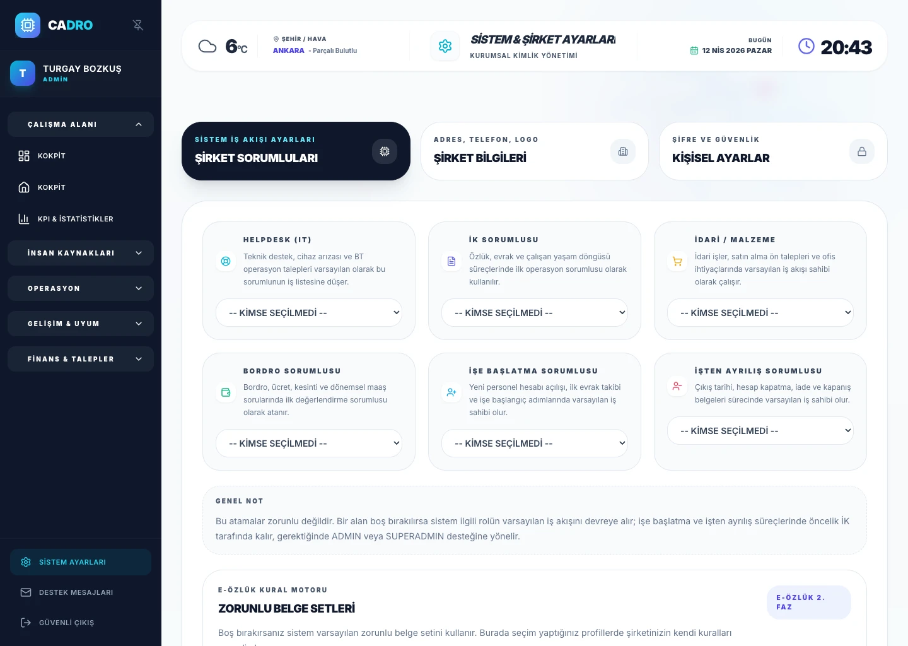

الوصول القائم على الأدوار
تُحدَّد صلاحيات كل مستخدم للوحدات والبيانات وفق نطاق مهامه.

الأمن وإدارة الوصول
يدمج CADRO الضوابط الأمنية في العمل اليومي من خلال الوصول القائم على الأدوار وإعدادات كلمات المرور والجلسات وسجلات التدقيق وأدوات التحكم الإدارية.
غياب الرؤية الواضحة لإدارة الهوية والوصول يضعف تطبيق السياسات الأمنية في العمليات اليومية.
تحديد صلاحيات كل دور يصل إلى بيانات الموظفين أمر أساسي لتعزيز الثقة ودعم إجراءات الامتثال.
يساعد الوصول القائم على الأدوار وأمن الجلسات وسجل التدقيق على دمج الضوابط الأمنية في العمل اليومي.
اطلب الوثائق الأمنية الحالية للاطلاع على تفاصيل التشفير وتخزين البيانات والمصادقة، وتحقّق من مدى ملاءمتها لمتطلبات مؤسستك قبل اتخاذ قرار الاستخدام.
الضوابط الأمنية
تُحدَّد صلاحيات كل مستخدم للوحدات والبيانات وفق نطاق مهامه.
تُدار تفضيلات الأمان وضوابط حماية الحسابات ضمن إطار مركزي.
تُسجَّل العمليات الحساسة وتُتاح للمراجعة الإدارية.
أدوات التحكم الإدارية
يساعد توحيد إعدادات المؤسسة وبيانات الشركة وإجراءات الوصول في مركز واحد على تنظيم تطبيق الضوابط الأمنية في العمليات اليومية.
استعرض إدارة إجراءات الامتثال ←
الأسئلة الشائعة
نعم. تتيح الأدوار ومستويات الصلاحيات حصر وصول المستخدمين في الوحدات والسجلات اللازمة لمهامهم.
نعم. تُسجَّل العمليات الحساسة لدعم المتابعة الأمنية والإدارية، ويمكن مراجعتها عند الحاجة.
هل أنت مستعد؟